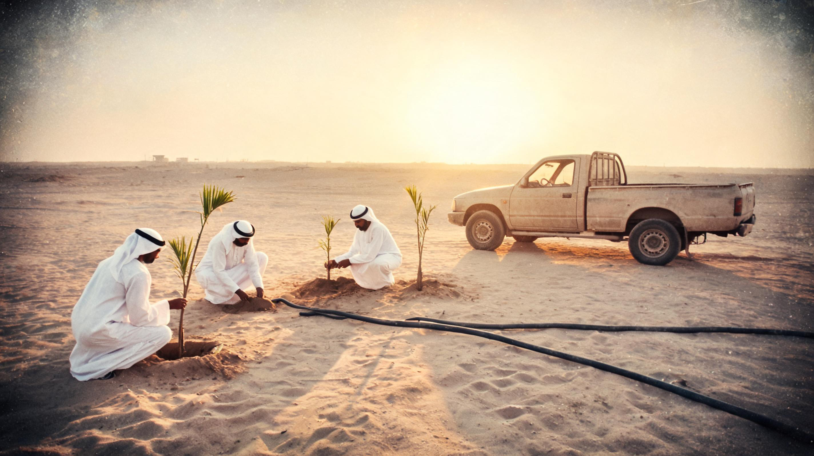
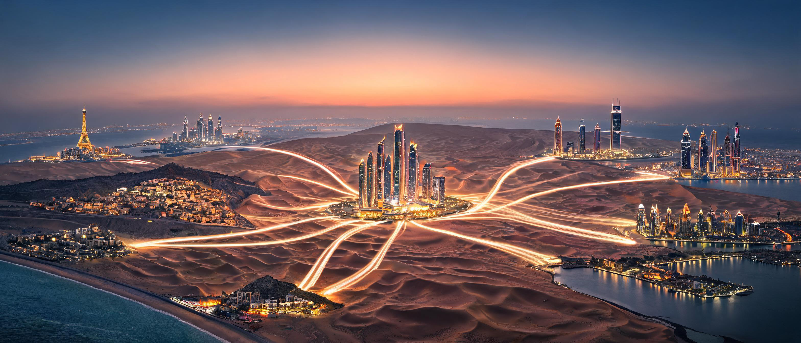
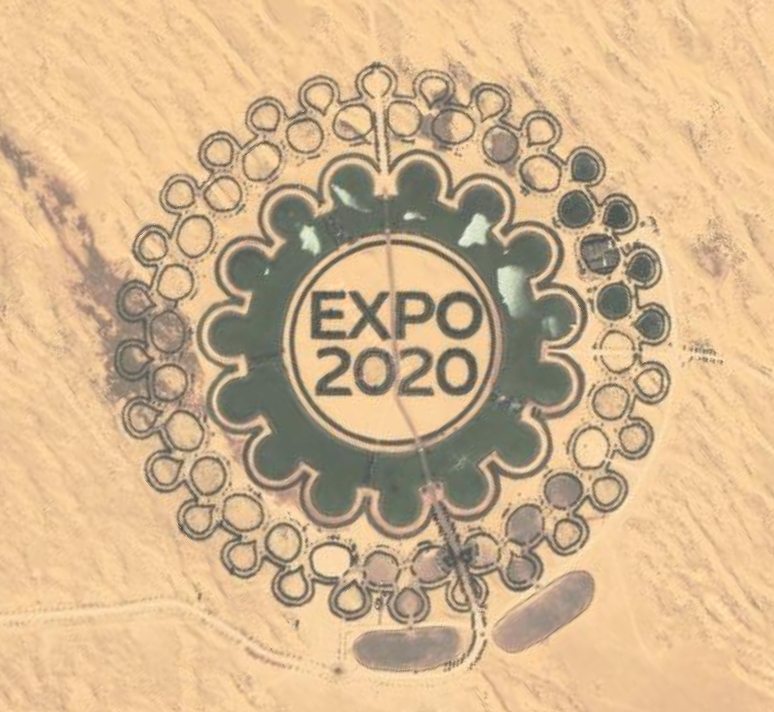
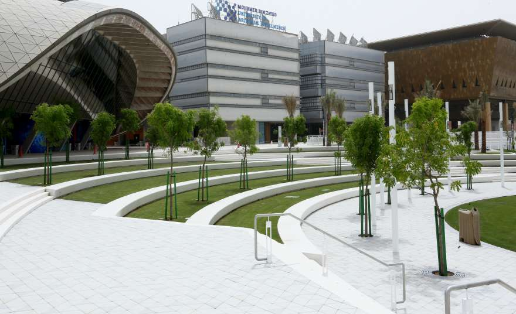
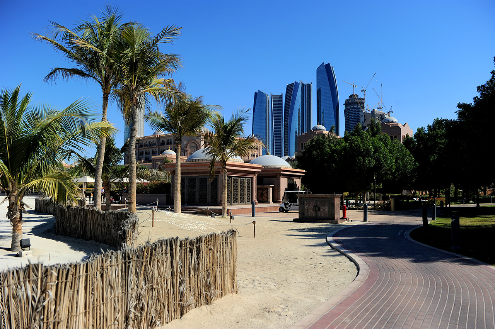
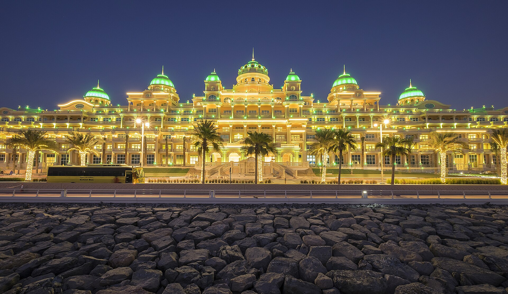
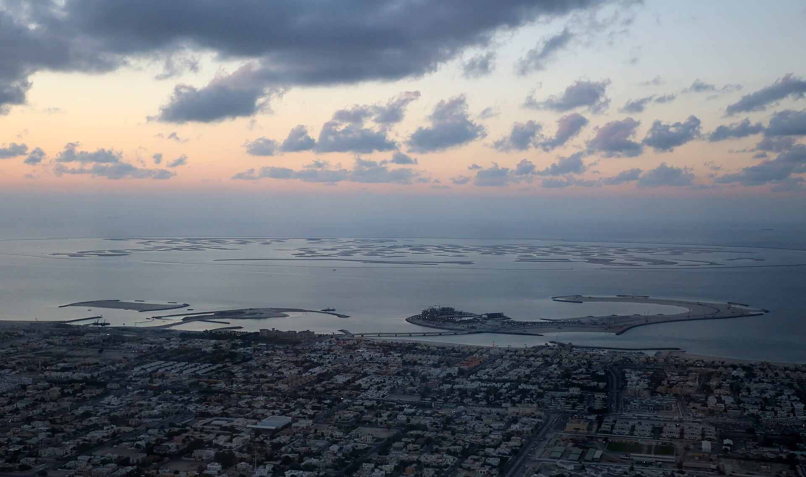
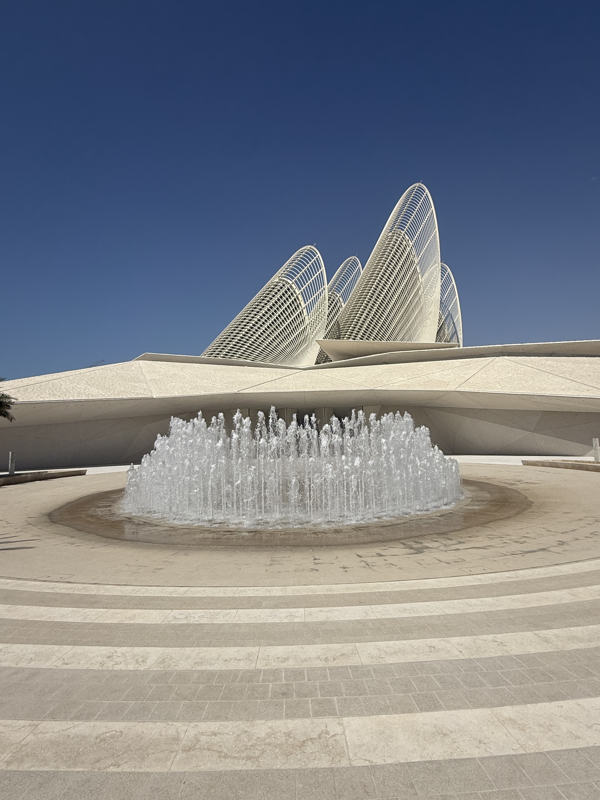

Preview build — uses your real asset paths from transitions/, assets/real/.
Clone the repo and open this file directly (or serve with any static server) to see it working.








Landscaping, softscape, and public realm works — Masdar City, Abu Dhabi.
Ongoing grounds and horticultural maintenance for a landmark property.
Site works and landscape installation for a national cultural landmark.